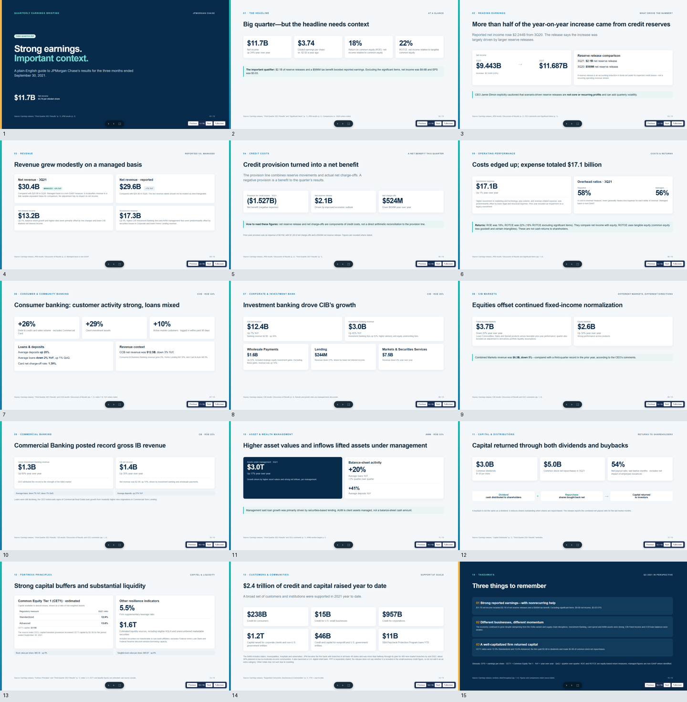
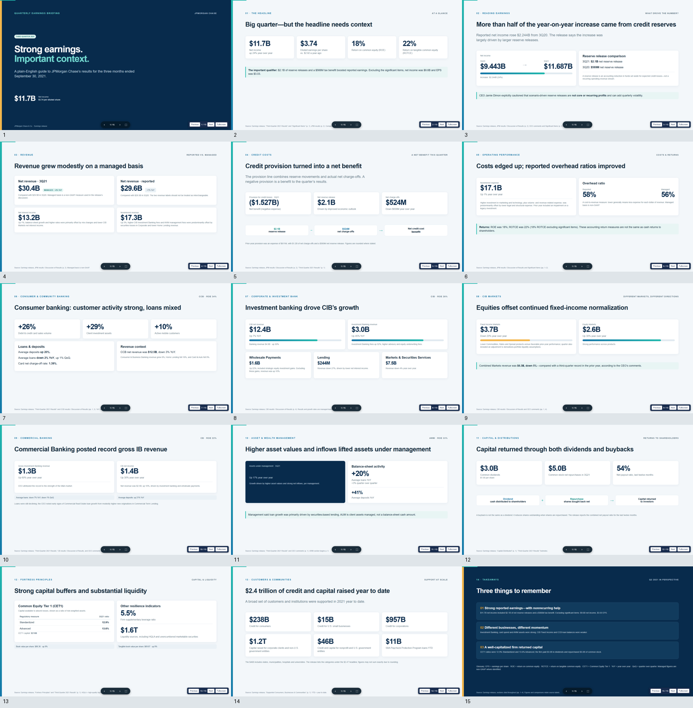

定义质量
从受众、目的与材料中推导维度、标准和证据。质量地图由 Agent 按当前任务创建。
DIMENSIONS · STANDARDS · EVIDENCESelf-harness 把 Agent 的“做任务”和“造方法”放进同一个循环：Agent 根据当前任务定义质量、建立检查与方法，再按证据选择改产物，或改进 harness。
领域标准、方法和组件不预先塞给 Agent；它们从任务材料和实际差距中长出来。
每个周期都从状态表开始。Agent 判断差距来自产物、方法、检查、流程还是标准；做一次干预，重渲染并重算状态。
从受众、目的与材料中推导维度、标准和证据。质量地图由 Agent 按当前任务创建。
DIMENSIONS · STANDARDS · EVIDENCE方法可以是程序、skill、数据或审稿角色。runtime 渲染并运行地图中的检查。
METHODS · CHECKS · WORKFLOWAgent 看差距与证据，决定修内容、用现有方法，或改变 harness 的某一环。
ADAPT THE WORK OR ITS METHOD维度全达标后做覆盖复核。如果盲审发现漏项，先扩展标准并补齐，再交付。
QUALITY-LED HANDOFFRuntime 负责渲染、执行检查、计算状态与保留证据。任务目标、质量定义、检查方法、每轮干预和组件去留由 Agent 判断。
这样一来，harness 不再是任务旁边可选的“开发模式”；它就是 Agent 推进工作时使用的地图、方法和反馈。
任务：面向非专业读者，制作 JPMorgan Chase 2021 年第三季度业绩 HTML 演示。Agent 使用质量差距推进修订，并创建了可复用的方法。数字来源为 JPMorgan Chase 的公开业绩公告，逐页引用随演示保留。

评审意见进入下一轮决策。内容改变后继续复核；终稿必须回应具体差距。

首轮盲审指出流动性数字缺少“estimated”限定、来源注释被导航遮挡，且 AWM 页面漏掉关键的 $3.0T 资产管理规模。
三件任务内生成的组件都公开可读。它们来自这份 deck 的事实核查和评审需求，并非预先配置的 PPT 套件。
独立检查演示稿、来源材料与渲染证据，给出具体差距。
查看组件 ↗SKILL · METHODEarnings deck review把数字、期间、会计标签、caveat、引用和可读性整理成审阅方法。
查看组件 ↗TOOL · VALIDATORDeck validator v4程序核对页数、HTML 导航、关键数值、解释文本与自包含资源。
查看组件 ↗两段均为 15 秒生成视频：左侧由基线 Codex 生成，右侧由 Agent 自进化方法生成，均使用 GPT-6.1 Sol。页面直接播放原始 1080p MP4，保留音轨，不二次压缩或转码。这是两种方法的成品展示，不是受控对照评测。
这是一次真实任务演示，不是对照实验。它说明该运行中 Agent 创建并使用了 reviewer、skill 和 validator，质量地图报告 3 个维度通过，盲审最终放行。单个案例不能证明这些组件带来了因果质量提升，也不能代表跨任务净收益。
代码与展示文件托管于 GitHub ↗